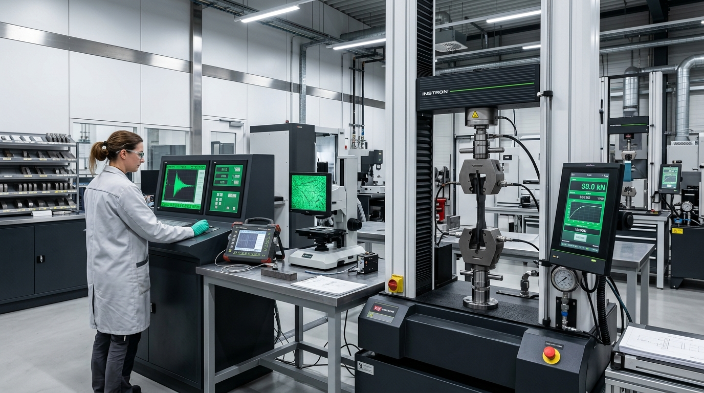

Документация
Разработка и восстановление паспортов
В случае утраты, утери или невозможности дальнейшего использования по причине износа паспорта и (или) руководства (инструкции) по эксплуатации оборудования, находящегося в эксплуатации, их дубликаты должны оформляться организацией-изготовителем данного оборудования.
При отсутствии организации-изготовителя восстановление паспорта (оформление эксплуатационного паспорта) оборудования должно осуществляться организацией, проводящей экспертизу промышленной безопасности технического устройства, применяемого на опасном производственном объекте (специализированной организацией).

- ▸Паспорт оборудования
- ▸Руководство (инструкция) по эксплуатации оборудования
- ▸Чертежи общего вида оборудования и его основных элементов
- ▸Исполнительные схемы линейных объектов
- ▸Расчет пропускной способности предохранительных клапанов
- ▸Расчет на прочность и устойчивость